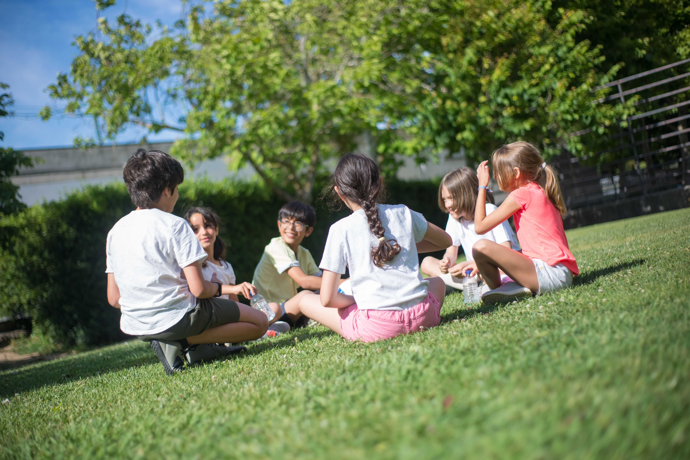
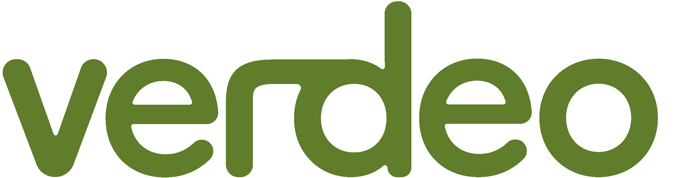
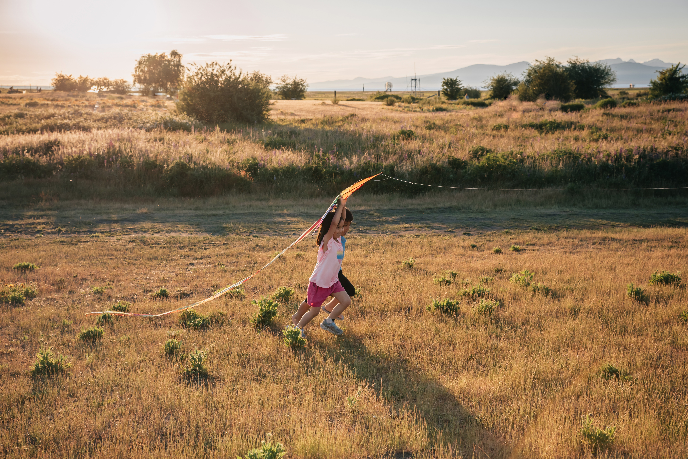
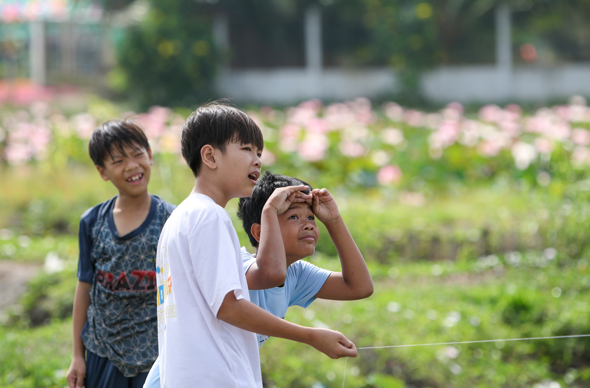
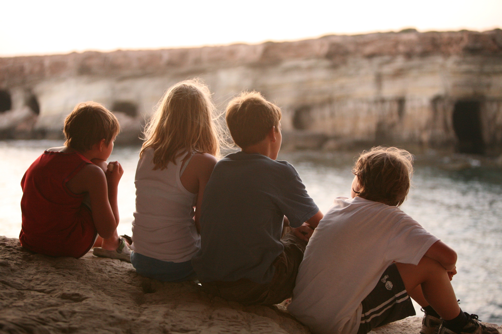
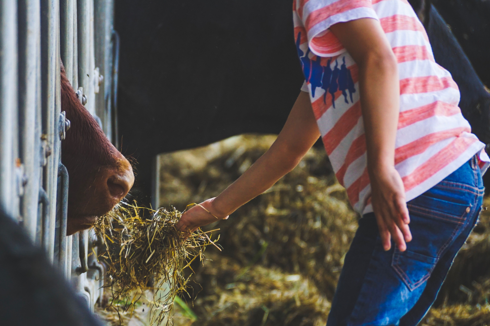
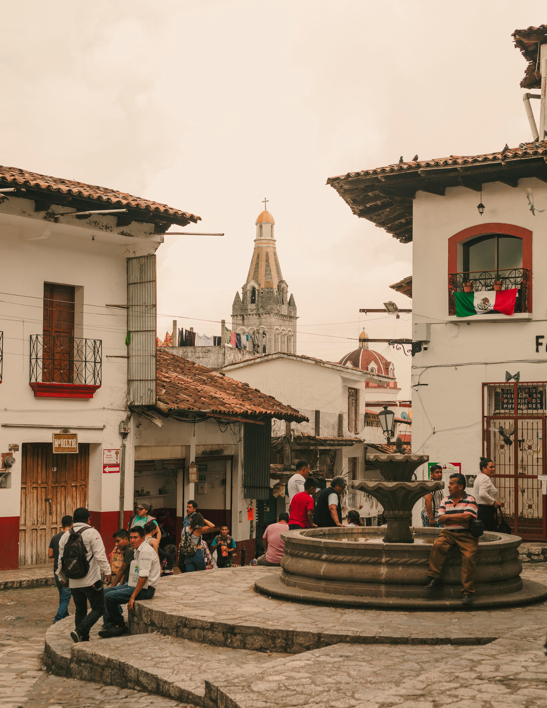
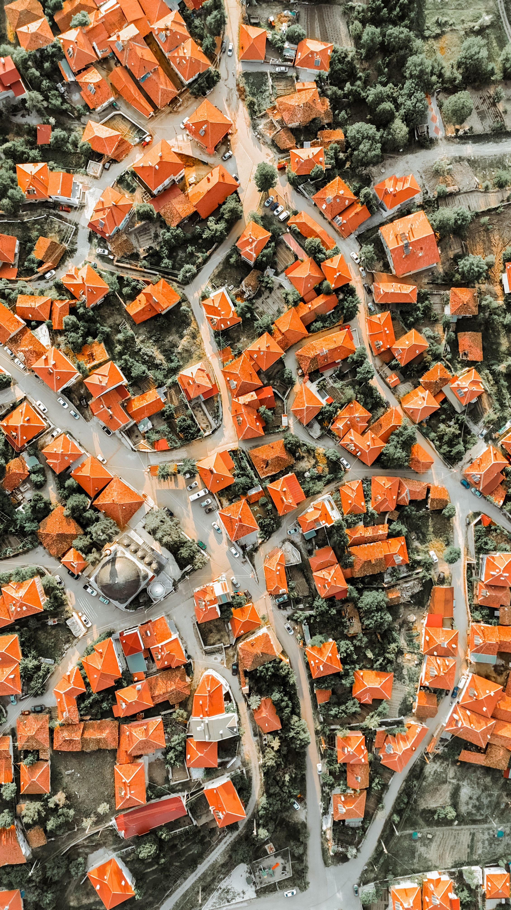
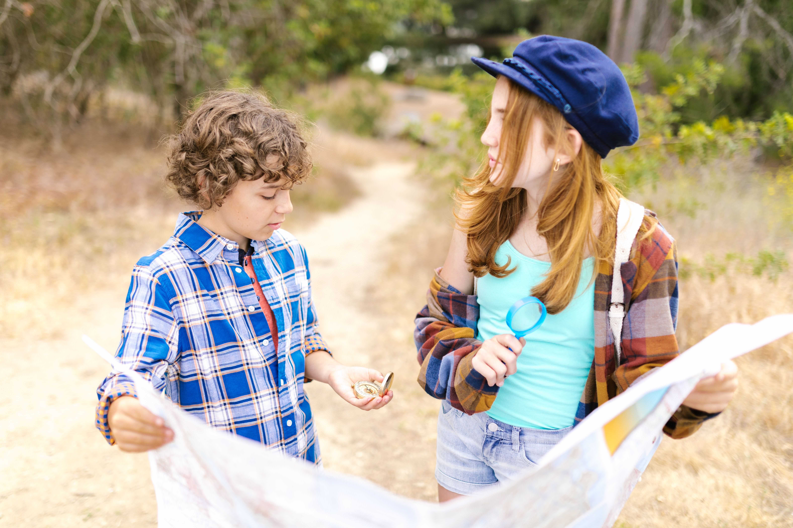
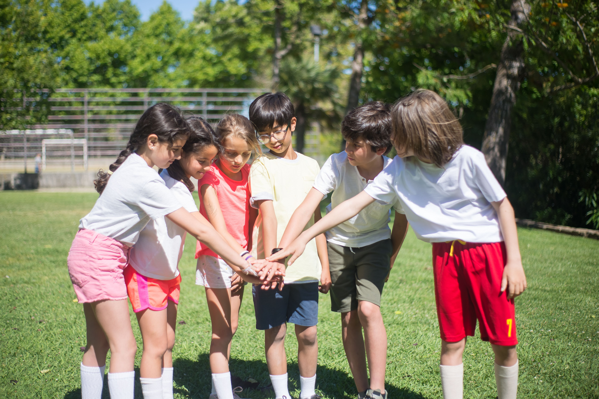

Niños y niñas
Actividades compartidas para conocerse, cooperar, divertirse y fortalecer los vínculos con otros niños.

Creación y gestión de gincanas físicas e inclusivas.
Creamos gincanas físicas e inclusivas en pequeños pueblos de España para que todos los niños puedan jugar, descubrir su entorno y formar parte de una experiencia compartida.
Trabajamos junto a los ayuntamientos para diseñar actividades adaptadas a cada localidad, donde la colaboración importa más que la competición.
Descubre cómo funciona
Compartir, descubrir y construir juntos. ¡Ven y conócenos!

VERDEO nace con una idea sencilla: crear una actividad en la que cada niño pueda participar y aportar algo al grupo, independientemente de sus capacidades o necesidades de apoyo.
Diseñamos retos que fomentan la cooperación, la comunicación, la autonomía y el sentimiento de pertenencia. No se trata de que cada participante compita por separado, sino de que todos colaboren para alcanzar una meta común.
La inclusión se construye participando. Cada niño tiene su lugar y cada aportación cuenta.
Adaptamos las actividades para favorecer la participación conjunta de niños con diferentes capacidades, intereses y necesidades de apoyo.

Actividades compartidas para conocerse, cooperar, divertirse y fortalecer los vínculos con otros niños.

Propuestas adaptables para niños dependientes, con dificultades de integración, autismo (TEA) y otras necesidades específicas.

Una oportunidad para aprender fuera del aula, trabajar en equipo y descubrir el entorno local de una forma participativa.

Una actividad personalizable para dinamizar los espacios del pueblo y promover la convivencia entre sus habitantes.
Los participantes recorren diferentes puntos del pueblo, superan retos y consiguen piezas que necesitarán para construir sus propios animales. El objetivo final solo se alcanza con la colaboración de todo el grupo.

El grupo recibe indicaciones para descubrir dónde comienza cada reto.
Los participantes encuentran los distintos puntos de la aventura por el pueblo.
Realizan una actividad adaptada y consiguen una pieza para su objetivo común.
Unen las piezas obtenidas para formar los animales de la aventura.
Reúnen todos los animales y completan la misión gracias al esfuerzo de todos.
VERDEO no propone una gincana idéntica para todos. Diseñamos cada experiencia por encargo del ayuntamiento, teniendo en cuenta las características del municipio y las necesidades de sus participantes.


Cada reto es una oportunidad para compartir, descubrir y aprender con los demás.
Trabajar juntos para alcanzar una meta común.
Crear oportunidades para que todos puedan participar.
Descubrir el pueblo y aprovechar sus espacios como parte de la aventura.
Desarrollar habilidades sociales mientras se disfruta.
Si formas parte de un ayuntamiento, un centro educativo o una entidad interesada en organizar una gincana inclusiva, estaremos encantados de conocer tu propuesta.
Información para ayuntamientos Información para centros educativos